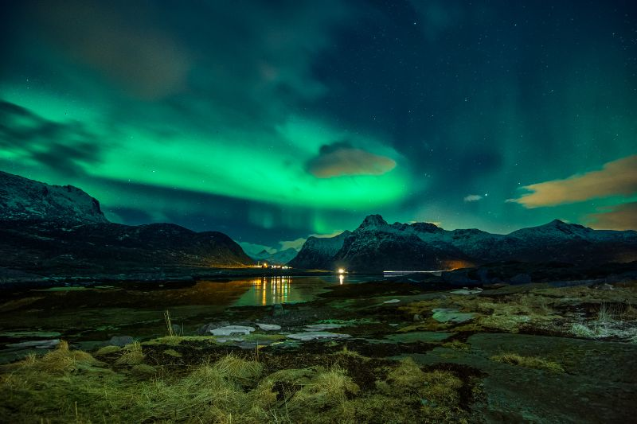

Helsinki
Helsinki, la capital de Finlandia en el sur del país, se ubica en una península del golfo de Finlandia. Su avenida central, Mannerheimintie, está bordeada de instituciones como el Museo Nacional, que recorre la historia de Finlandia desde la Edad de Piedra hasta la actualidad.
Volver arriba

Paisajes
Los paisajes nacionales de Finlandia son una distinción oficial creada en 1994 por el Ministerio de Medio Ambiente de Finlandia.
Volver Arriba